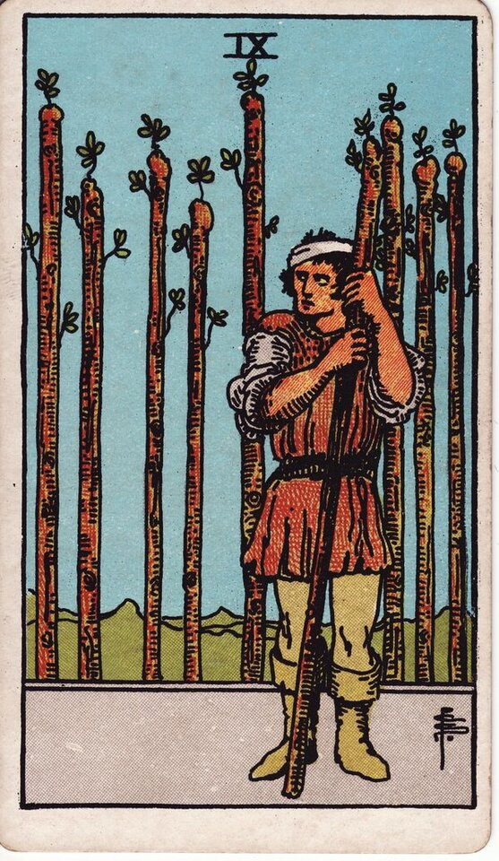

Minor Arcana · Suit of Wands
Nine of Wands Tarot Card Meaning
The Nine of Wands is bruised but still standing - resilience, wariness, and one last push. Want to know what it means in your spread? Every reader on our line is hand-vetted - connect in under 60 seconds, $1 for your first minute, hang up anytime.
- Hand-vetted readers
- Available 24/7
- Hang up anytime

Nine of Wands - What It Shows
A figure leans on a wand, head bandaged, watching warily. Eight wands stand behind him like a fence he's built - or a battle he's already fought. He looks tired and guarded but he hasn't dropped his guard. After the rush of the Eight, the Nine is the last stretch: weary, defensive, but not done.
Nine of Wands Upright Meaning
Upright, the Nine of Wands is resilience. You've been through it, you're carrying the scars, and you're bracing for one more challenge - but you have more strength left than you think. The card's core message: don't quit right before the finish line. It also flags guardedness - protective, sometimes overly so.
Nine of Wands Reversed Meaning
Reversed, the defences have become the problem. Burnout, paranoia, refusing the help that would actually relieve you, or giving up just before the breakthrough. It can mean walls so high nothing good gets in either.
Nine of Wands in Love & Relationships
In love, the Nine of Wands is guardedness from past hurt - walls up, slow to trust, testing a partner, or persevering through a rough patch. Example: a caller who kept "self-sabotaging" new relationships drew this card; the read named old wounds making her defensive with people who hadn't earned the distrust - the work is deciding which walls still serve her.
Nine of Wands in Career & Money
For work it's the final, exhausting stretch of a long effort - almost there, tempted to quit, needing to dig in once more. Example: someone ready to abandon a project near completion pulled this card; the message was that the finish is closer than the fatigue suggests - one more push, not surrender.
Nine of Wands as Advice
As advice: keep going, but check your guard. You have the stamina for one more round - use it - and notice where defensiveness is protecting you versus isolating you.
What People Ask About the Nine of Wands
Common questions readers hear about this card:
"Does it mean give up?"
Usually the opposite - it warns against quitting just before success.
"Nine of Wands as feelings?"
Guarded, wary, 'I've been hurt and I'm protecting myself.'
"Is someone testing me?"
It can show testing or wariness on either side of a connection.
"Why am I so tired in this reading?"
The card validates real fatigue while urging endurance.
Nine of Wands - Yes or No?
A conditional yes - yes if you push through one more challenge; the result is close but earned. Reversed leans no, especially if burnout wins.
Nine of Wands Reversed in Love & Career
Reversed, the Nine of Wands is worth a closer look by area. In love, it's walls so high that even safe people can't get in - guardedness from old wounds that's now sabotaging present connections, paranoia, or testing a partner until they fail. It can also mean you're worn down and ready to drop your guard entirely, for better or worse. In career, reversed it's burnout, refusing the help that would actually relieve you, or quitting right before the breakthrough because you're too tired to see how close it is. The reversed Nine's question is whether your defences are still protecting you or just isolating you. A live reader can help you tell which walls to keep.
Nine of Wands Timing in a Reading
Timing is the least precise thing tarot does, so treat this as a lean, not a date. The Nine of Wands sits near the end of a cycle - readers usually frame it as "almost there," a final stretch over the coming weeks rather than a quick resolution. It implies one more push before the finish. Reversed, exhaustion drags the timeline and the end keeps receding until you address the burnout. A live reader reads the duration from the full spread and your question far more reliably than the card alone.
Nine of Wands Card Combinations
Context changes everything - a few pairings readers see often:
Nine of Wands + The Sun
A breakthrough and relief right after the last hard push.
Nine of Wands + Ten of Wands
Perseverance tipping into burnout - time to put weight down.
Nine of Wands + Seven of Wands
Repeated defending; resilience that's been tested again and again.
Nine of Wands in a Tarot Reading
A meanings page is the map; a live reading is the territory. The Nine of Wands shifts with its position and the cards around it - which is what a hand-vetted reader interprets for your question. See the full Suit of Wands, all 56 cards on the Minor Arcana hub, or start a phone tarot reading.
← Eight of Wands · Next: Ten of Wands →
What Does the Nine of Wands Mean for You?
A meanings list is the map; a live reading is the territory. We'll connect you with the right hand-vetted tarot reader in under 60 seconds. $1/min first call · 15 minutes for $10 · hang up anytime · 100% satisfaction promise.
Call (888) 920-6662 NowNine of Wands - Frequently Asked Questions
What does the Nine of Wands mean?
Resilience and one last push - tired and wary, but still standing.
What does it mean reversed?
Burnout, paranoia, refusing help, or giving up before the breakthrough.
What does the Nine of Wands mean in love?
Guardedness from past hurt - walls up, or persevering through a tough patch.
Is it a yes or no card?
A conditional yes - yes if you push through one more round.
How much does a reading cost?
First-time callers pay $1/min, or 15 minutes for $10, and you can hang up anytime.
Get Your Tarot Reading Now
Connected to a hand-vetted reader in under 60 seconds, the cards pulled on your real question, and you hang up with clarity.
Call (888) 920-6662